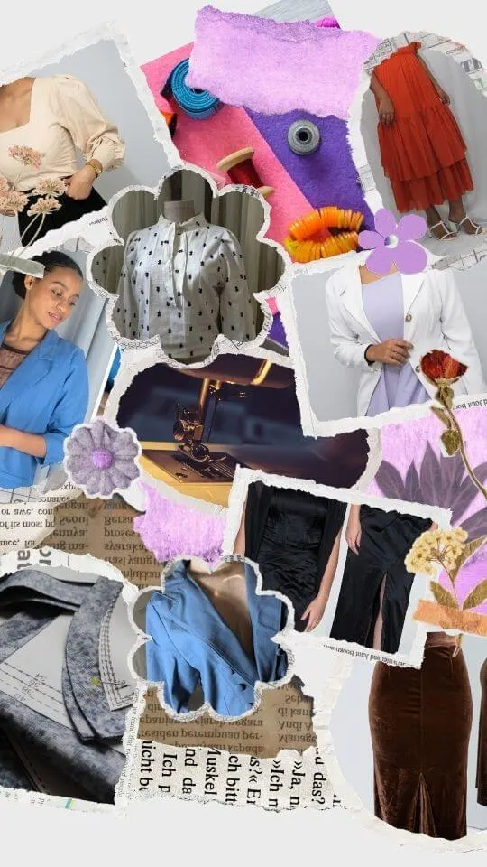
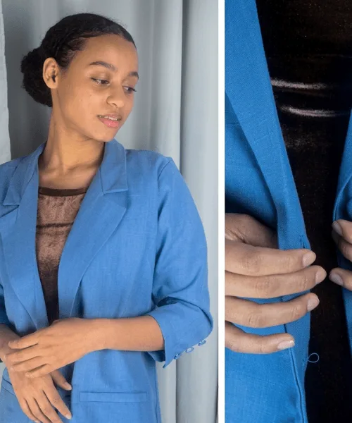
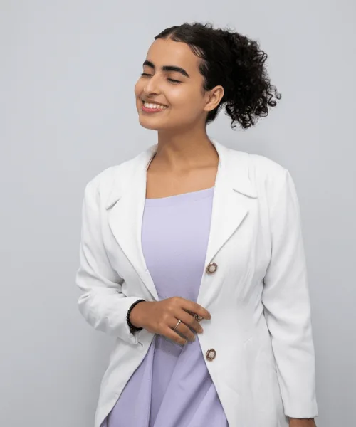
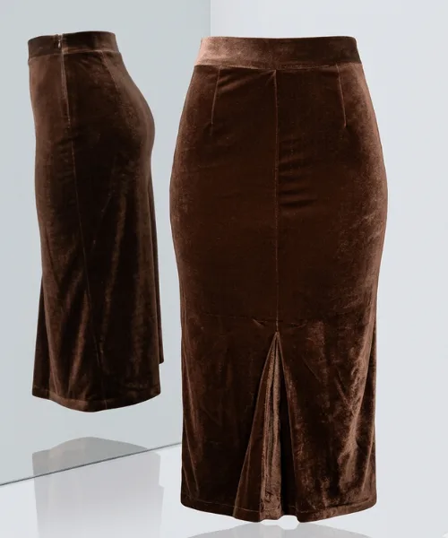
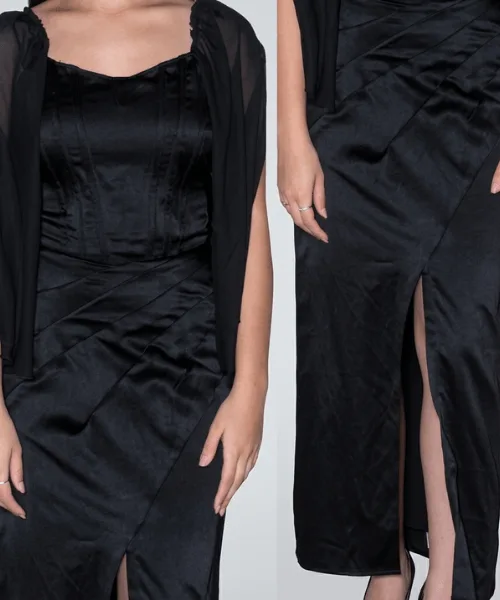
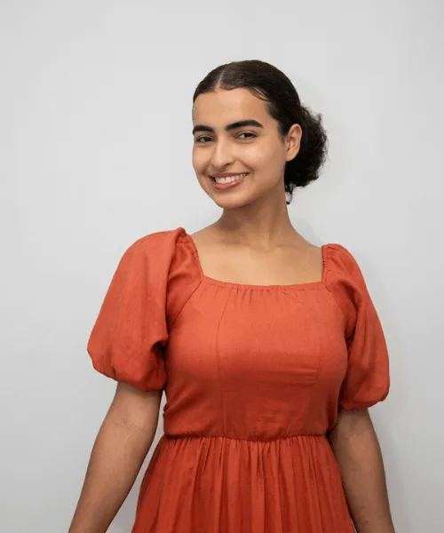
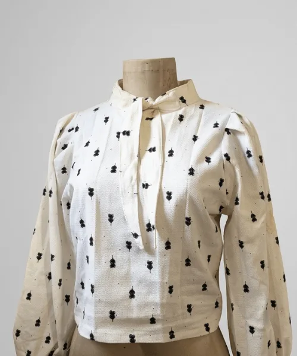

Sob Medida
Roupas feitas do zero, totalmente adaptadas ao seu corpo e estilo. Traga sua inspiração e nós a transformamos em realidade.
Moda e Confecção
Peças sob medida e reformas com o carinho de quem ama o que faz há mais de 20 anos.
Do rascunho ao acabamento final, entregamos perfeição em cada detalhe.
Roupas feitas do zero, totalmente adaptadas ao seu corpo e estilo. Traga sua inspiração e nós a transformamos em realidade.
Sua roupa favorita precisa de um ajuste? Realizamos reformas, barras, trocas de zíper e ajustes finos em geral.
Atendemos o público masculino e feminino, desde crianças até adultos, em todos os tamanhos e modelos.

Me chamo Luciana e minha jornada com a costura começou em 2002. Desde então, nunca parei de transformar tecidos em sonhos e confiança.
Acredito que cada peça carrega uma história e merece ser tratada com dedicação máxima. Meu compromisso é com a qualidade e o caimento perfeito, independentemente do desafio.
Todas as vossas coisas sejam feitas com amor 1 Coríntios 16:14Agendar Visita
Um pouco do que passa pelas nossas mãos.






Pode mandar pra gente! Fazemos exatamente como você quiser — do modelo mais simples ao mais elaborado.
Enviar InspiraçãoEste site foi solicitado via @Instagram